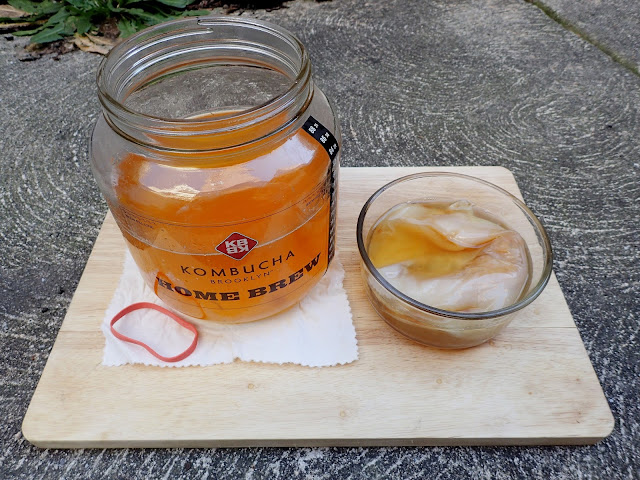

How to Make Your Own Kombucha
By: Eleanor
What is Kombucha?
Kombucha is a fascinating beverage that has been around for hundreds of years, but it has only recently gained popularity in the Western world. A fermented tea that’s full of probiotics and antioxidants, it’s a great way to boost your gut health and ward off illness. But what exactly is kombucha, and why is it so good for you?
At its most basic, kombucha is a simple mixture of tea, sugar, and a SCOBY (Symbiotic Culture of Bacteria and Yeast). This mixture is then left to ferment for a week or more, during which time the SCOBY breaks down the sugar and releases beneficial bacteria and yeast into the tea. The end result is a slightly sweet, slightly tangy drink that has a fizzy carbonation and a host of health benefits.
But what makes kombucha so special? For starters, it’s packed with probiotics, which are essential for good gut health. Probiotics are live bacteria and yeasts that help to keep your digestive system in balance, promote healthy immune function, and even improve mental health. Kombucha is also rich in antioxidants, which can help to reduce inflammation, fight off disease, and even lower your risk of chronic conditions like heart disease and cancer.
But perhaps the best thing about kombucha is that it’s incredibly easy to make at home. With just a few simple ingredients and some basic kitchen equipment, you can have a steady supply of delicious and nutritious kombucha on hand anytime you like. And in the next section, we’ll show you exactly how to do it.
Ingredients and Equipment
Making your own kombucha can be a fun and rewarding experience. It's a trendy drink that has been touted for its health benefits, and it's no wonder that many people are eager to learn how to create it themselves. Before diving into the process, it's essential to understand what ingredients and equipment you'll need to get started.
The primary ingredient in kombucha is tea, preferably black tea, as it provides the right balance of nutrients and tannins for the SCOBY (symbiotic culture of bacteria and yeast) to ferment correctly. You can use unflavored tea bags or loose-leaf tea, but avoid using flavored or herbal tea, as they may contain oils and additives that could disrupt the fermentation process.
The next essential ingredient is sugar. Kombucha SCOBY feeds on sugar to produce the characteristic tangy flavor of kombucha. Organic cane sugar or plain white sugar both work well, but avoid using honey or substitute sweeteners, as they contain antimicrobial properties that could harm the SCOBY.
Apart from tea and sugar, you'll need a SCOBY and a starter liquid. SCOBY acts as the fermentation agent responsible for turning the sugared tea into kombucha. You can get a SCOBY from a friend, buy one online, or make one yourself. The starter liquid is raw kombucha that helps lower the pH and discourage harmful bacteria growth. You can use store-bought kombucha as a starter, but make sure it's unflavored and unpasteurized for better results.
Other equipment you'll need include a brewing vessel, typically a wide-mouth jar, breathable cover, such as a cloth or coffee filter, and a rubber band to secure the cover. A thermometer will help you monitor the brew temperature, and a stirring utensil to stir the tea when adding the starter liquid.
In summary, making kombucha requires simple and readily available ingredients and equipment. With the right combination, you can brew a tasty and healthy drink at home while enjoying the process.
Brewing Process
The Brewing Process: Creating Delicious Kombucha at Home
Kombucha is a health drink that is produced by fermenting sweet tea with a symbiotic culture of bacteria and yeast (SCOBY). This beverage is popular among health enthusiasts because of its potential health benefits such as immune system, digestive system and liver support. It is also a great alternative to sugary sodas or alcoholic drinks.
Making your own kombucha at home is relatively easy, and it is a great way to control the ingredients used and the flavor of the drink. The brewing process consists of four main steps: preparing the sweet tea, introducing the SCOBY, fermentation, and carbonation.
Preparing the sweet tea involves boiling tea leaves of your choice in water and then dissolving sugar in it. This sweet tea mixture is then left to cool to room temperature. Next, the SCOBY is added to the sweet tea. The SCOBY feeds on the sugar in the tea, ferments it and produces the healthful components of kombucha.
Fermentation is the most critical stage of the process as it determines the flavor, carbonation level, and alcohol content of the drink. This stage takes approximately 7-14 days, depending on your preference. A shorter fermentation time results in a sweeter taste, while a longer fermentation time produces a vinegar-like taste.
To boost carbonation, add fruit juice, chopped fruit or ginger to the fermented tea before bottling it. This creates a secondary fermentation process in the sealed bottles that traps carbon dioxide. After 2-3 days, the bottled kombucha can be chilled and consumed or stored in the refrigerator.
In conclusion, the brewing process of kombucha is relatively easy and results in a refreshing, healthy drink for you and your family. With the right ingredients and equipment, making your kombucha at home is a cost-effective and rewarding experience. Get creative with your kombucha recipes and try new flavors with every batch!
Flavoring Options
If you're a fan of DIY health food trends, then you've probably already dabbled in making your own kombucha. This ancient beverage is a great way to add beneficial probiotics to your diet, and can even be brewed at home with relative ease. However, once you've got the basic brewing process down, you might find yourself wanting to experiment with different flavors and ingredients to make your kombucha truly unique. In this section of our website, we'll be exploring some of the best flavoring options for homemade kombucha.
One of the easiest ways to add flavor to your kombucha is by using fresh fruit. This is great because you can experiment with different fruits depending on the season, and also because the fruit provides natural sugars for the kombucha to ferment. Some of our favorite fruit options include strawberries, blueberries, and mangoes, but the possibilities are endless!
If you're looking for something a bit more exotic, why not try adding herbs or spices to your kombucha? Ginger is a popular choice, and adds a spicy kick to your drink. Mint and basil are also great options, and can add a refreshing twist to your brew. For a more complex flavor profile, you might even consider using things like lavender, rose petals, or cinnamon.
Finally, if you're feeling really adventurous, you could even try combining different flavors and ingredients to make your own unique blends. For example, a strawberry-mint kombucha might sound strange, but could actually be incredibly delicious! The key is to experiment and have fun with the process.
No matter what flavoring options you choose, the most important thing is to use high-quality, organic ingredients and to pay close attention to your brewing process to ensure that your kombucha is safe to consume. With a little bit of experimentation and creativity, you'll soon be able to make your own perfect, flavorful batch of homemade kombucha!
Safety Precautions
While making your own kombucha can be a rewarding and delicious experience, it can also present certain risks if proper safety precautions are not taken. Before embarking on your kombucha-making journey, it is important to educate yourself on the potential hazards and ways to mitigate them.
One of the primary concerns with brewing kombucha is the risk of contamination. Anytime you are working with living organisms, there is the potential for harmful bacteria or fungi to enter the mix. To avoid contamination, it is essential to maintain a clean and sanitized workspace, use filtered or distilled water, and ensure that all equipment is properly sterilized before use.
Another consideration is the necessity of using the right tools and materials. While it may be tempting to use whatever you have on hand, it is important to follow recommended guidelines for equipment and ingredients. For example, using a stainless steel or plastic brewing vessel rather than a ceramic one can prevent lead contamination. Additionally, be sure to use organic tea and sugar to avoid pesticides or other harmful chemicals.
Finally, it is important to monitor the fermentation process carefully. Kombucha needs to be brewed at the correct temperature, typically between 68-86°F, and for the appropriate amount of time based on your recipe. Over-fermentation can lead to an overly acidic or vinegar-like taste, while under-fermentation can lead to residual sugar and potential contamination.
By following these safety precautions, you can ensure that your homemade kombucha is not only delicious but also safe to drink. Stay curious, experiment with flavors, and enjoy the process of becoming a kombucha brewmaster!
Troubleshooting
Common Problems When Brewing Kombucha and How to Fix Them
Kombucha, a probiotic-packed drink, is all the rage nowadays. While it may seem like a daunting task to make your own, it’s actually quite simple. However, that doesn’t mean it’s foolproof. Contrary to popular belief, kombucha-making isn't perfect, and problems can arise. But don’t worry, because we have got you covered. In this section, we’ll discuss some common problems when brewing kombucha and how to fix them.
The first step in troubleshooting your kombucha is understanding what typical issues may arise. Some of these problems include slow fermentation, mold growth, and sour or overly sweet flavors. Luckily, these problems are easily preventable with proper care and attention to detail.
Slow fermentation, also known as a "lazy brew," can happen if the temperature isn’t optimal, if there isn’t enough oxygen entering your brew, or if the SCOBY isn't active enough. We’ll teach you how to remedy these issues, so your kombucha can start fermenting properly again.
Mold can be a possibility if the brewing container, utensils, or even the SCOBY isn’t cleaned properly. It can be a hassle to deal with but fear not – we’ll provide tips on how to identify mold and steps to take in case you encounter it.
Lastly, flavor issues often arise when there’s too much or too little sugar, the fermentation time is too short or too long, or the tea quality is not up to par. We’ll teach you the ideal sugar-to-tea ratio, brewing temperature, and timing to get the perfect kombucha flavor that suits your taste buds.
In conclusion, understanding the common problems that occur during the kombucha brewing process and how to fix them is an essential part of becoming a successful kombucha brewer. With our expert tips and knowledge, you'll be on your way to brewing delicious and healthy kombucha in no time.